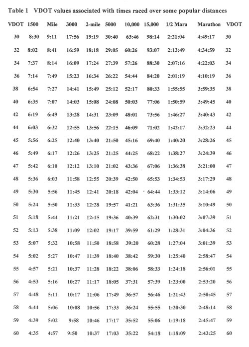
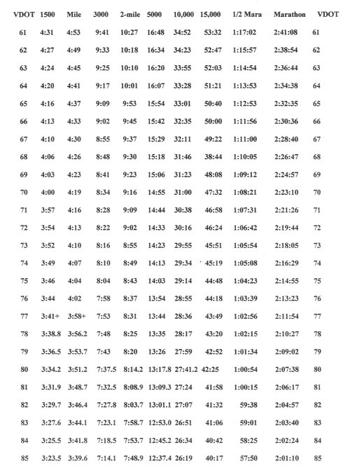
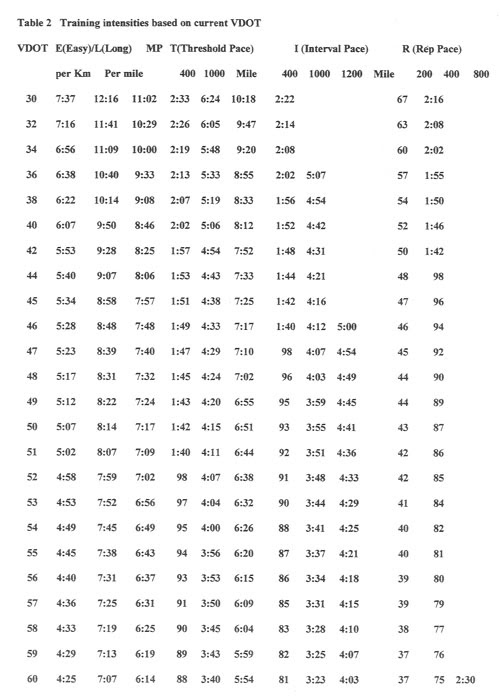

關於訓練強度，我參考的是 Daniels' Running Formula
為了讓東華鐵人隊隊員在訓練時都能認清每次訓練的目標，讓他們在訓練時有明確的方向，和隊長阿祥討論過後，決定以後的課表都會先詳細列出四大主項，在出發練習前我或隊長再口頭說明一次，這四個主項分別是：
- 「訓練的項目」
- 「訓練的距離或重量」
- 「訓練的時間或組數」
- 「此次訓練的強度」
訓練項目分成游、騎、跑、肌力、按摩與伸展。
###
###
用 Daniels' Running Formula 來定義東華鐵人隊的訓練強度
再來就是最困難的部分，如何定義每次訓練時的「訓練強度」給隊員們清楚知道今天到底要跑、要騎、要游多快！？
該如何說明才能讓隊員們了解每次訓練的強度，因為每個人的程度都不同，所以 10 公里跑 45 分的強度對我和對其他隊員的意義等級都不同。當我在思考該如何定義強度的問題時，想到了《丹尼爾斯博士跑步方程式》(Daniels' Running Formula)這本書剛好把跑步的訓練強度分成五級。
丹尼爾斯(Daniels)所定義的五種訓練強度定義為 Easy pace (E)、Marathon pace (M)、Threshold pace (T)、Interval pace (I)、Repeat pace (R)。括弧後為簡稱，下面我依強度等級分為 1~5 級，再作大略說明，若隊上有人看不懂再直接問我，我會再舉例解釋：

- #### 【1】=Easy pace
65～79%HRmax：是用作恢復跑、熱身、緩和與從事 LSD 訓練時的強度，主要目的是建立有氧基礎，也為後續較高強度的訓練做好準備、強化心肺耐力與增加肌肉端的攝氧能力。它也常作為兩次高強度訓練間的緩和訓練。
丹尼爾斯建議 E pace 的訓練至少要持續同等強度一個小時以上。
- #### 【2】=Marathon pace
80～90%HRmax：此級強度是馬拉松跑者最主要的訓練強度，目的是鍛鍊跑步相關肌群與有氧耐力
- #### 【3】=Threshold pace = Tempo
88～92%HRmax：訓練身體的抗乳酸能力／乳酸閾值／臨界速度
此級強度的訓練目標是「提升乳酸閾值」。跑者在此級配速下最高目標是要能在比賽中維持 60 分鐘。丹尼爾斯描述跑在此級強度的感覺是「comfortably hard」。對菁英級的跑者來說，此級強度跟半程馬拉松比賽時的強度相同，但對於業餘跑者來說，能維持 10km 的此級配速就已經很不錯了。
丹尼爾斯指出，要能保持此級強度下的穩定配速，訓練效益才能達到最高。所以一般又被稱為「tempo runs」，一般訓練的時間在 20 分鐘左右(這裡指的是連續跑)，當連續跑的時間超過 20 分鐘時，可稍微降低 T pace(第 3 級)所設定的配速。在此級強度的間歇訓練，可依 3~10 趟來進行，每趟最少跑 3 分鐘，單趟最長可跑到 15 分鐘，休息時間是訓練時間的 20%-25%。以每趟 3 分鐘為例，休息時間為 36~45 秒(180 秒*0.2~180*0.25)。
T pace 強度的訓練每星期的量不能超過總訓練量的 10%。
- #### 【4】=Interval pace
98～100%HRmax：訓練目的是為了提升最大攝氧量 (VO2max)
當速度逼近 VO2max 時，會對攝氧量系統形成壓力，進而提升攝氧容量 (oxygen uptake capacity)。因為此級的強度很高，在比賽中最高只能維持 12 分鐘左右。
為了在訓練時能延長此級強度的「總訓練時間」，所以利用「間歇」的方式進行，這樣才能讓身體保持在此級強度的總時間增加。
那在此級強度進行間歇訓練時要如何分配訓練時間與休息時間呢？最佳的訓練時間是 3~5 分鐘。注意：如果在 I pace 下進行 5 分鐘以上的效益會很低，所以丹尼爾斯教練很常勸阻那些進行 1 miles (1.6km)，配速為 5:00/mile 間歇訓練的跑者，改建議他們用同等強度跑 1200m 的間歇，訓練效果會更好。
舉例來說，在 I pace (第 4 級)的強度下可進行 6 x 800m 的間歇，每趟跑完慢跑 400m。在美國讀運動科學的前東華鐵人隊友 Jamie 看過這篇後給了下述補充：「Interval pace 的訓練和休息時間比為 1：1，這樣才可以保持在 VO2max 的強度，而不會太快累積乳酸造成疲勞。例如跑 3min 休息 3min，休息太久 VO2 就會掉下來，休息太少就會太快累積乳酸造成之後幾個 set 強度下降，反而練不到 VO2max。」
I pace 強度的訓練每星期的量不能超過總訓練量的 8%。
- #### 【5】=Repetition pace
（race pace or faster）: improve running economy and VO2max（提升跑步經濟性和最大攝氧量）
關於第 5 級的 Repeat pace，可能有些人會疑惑，為什麼在 98～100%HRmax 之上還有一級，波肥幫忙整理如下：R 的訓練都是以 200M~400M 的距離為主，不會再拉長，【總里程】通常不會超過 3K，而且每趟之間必須有「充足的休息」，因為是無氧系統，主要是訓練你的速度感，並試圖讓選手在同樣的高速中找出更輕鬆的方式（即能以更輕鬆的狀態完成該速度的練習），這是作者認為有效增進 economy 的訓練情境和方式，不過在作者提及的馬拉松課表並沒有 R pace 的練習，R pace 出現在中距離（5～15K）以下的選手課表中。另外，作者強調不能一開始就出 R pace 的課表，作者在安排課表時第一期是 PI 期（prevent injuries），全部做 Easy pace 的慢跑，進行六週後才有安排 R pace 的課表。
Jamie 補充到：「R pace 應該不會增加 VO2max，因為時間短又休息很久,來不及達到 VO2max 就跑完了，刺激不到 VO2max 系統。」
I pace 練 VO2max，T pace 練乳酸閾值。
書中還提到一個指標，你的 R pace 強度的一週訓練量不能超過總訓練量的 5%。
國峰問：「最後一級【 Repetition pace: improve running economy 】是怎麼樣的訓練，還有它為什麼可以增加跑步經濟性。Interval pace 的強度已經到 98%~100% HRmax，那 Repetition pace 又如何達到最高強度呢？」
Jamie 答：「R pace 可以增加 economy 的理論我也不是很清楚，也不太懂為什麼。HRmax 代表你心臟能負荷的能力，是輸送血液的能力，但是在強度超過 VO2max 時已經到達無氧運動，血液提供氧氣產生的能量速率已經趕不上能量消耗的速率，多的能量需求就從無氧系統提供。無氧系統提供能量的效率比有氧系統高很多，所以你能跑更快，例如 R pace，所以在跑 R pace 時 HR 不是很重要，配速比較重要。」
尋找自己在這五種訓練強度下所對應的配速
在網路上有人把 Daniels 的五種訓練等級設計成網頁表單，可以依自己的能力輸入數值，進而調配出不同強度等級的訓練菜單與配速表，網址見（用 IE 較佳）：**http://www.runbayou.com/jackd.htm**
另外也可利用下面兩種表格找出自己目前的 VDOT，再透過 VDOT 來找出這五種強度分別的配速為何。
####
什麼是 VDOT？
國峰問：「VDOT 的全名是什麼？我上網查很久都查不到。」
Jamie 答：「VDOT 全名書裡也沒有說，我想只是一個代名詞，他的解釋在 46 頁，它是 performance 的 VO2max，可以把它想成在生理達到 VO2max 時跑步的速度。VDOT 是真的 VO2max(實驗室裡測試的那種)和 running economy 的結合。假設兩個人有相同的 VO2max,一個人 economy 較高他的 VDOT 就比較高，也就是在達到 VO2max 時跑步速度較快，儘管 VO2max 相同。因為他有較好的效率把身體產生的能量轉換成跑步的速度。」
實例說明，用 VDOT 找各級強度的配速
以東華鐵人隊上譽寅的例子來說，他在 2012 年 3 月 29 日跑外環 5 公里測驗的成績為 19 分 15 秒，所以用【表 1】可查出他的 VDOT 為：52。
再用 VDOT 的「52」去對應【表 2】，即可找到不同等級的配速分別為：
#
- 第 1 級：E = 每公里 5 分 08 秒
- 第 2 級：M = 每公里 4 分 24 秒
- 第 3 級：T = 每公里 4 分 07 秒 (400m 跑道每圈 98 秒)
- 第 4 級：I = 每公里 3 分 48 秒 (400m 跑道每圈 91 秒)
- 第 5 級：R = 200m 間歇配速 42 秒；400m 間歇配速 85 秒
或是利用VDOT Calculator，也可以獲得相似的結果。
在此必須一再提醒(也是丹尼爾斯在書中一再提到)的是，VDOT 是當下測驗的結果，並非是用你所希望的目標速度來求。
####
【表 1】是一個查詢的表格，你可以用你目前的跑步測驗成績來尋找自己當下的 VDOT 值，找到之後，再用這個數字去下面的【表 2】配對，你就能知道自己在這五種強度中的配速分別是多少。


【表 2】的用法，是在你已經從【表 1】中找到你「目前」的 VDOT 之後，再從下面的表格中依那個 VDOT 值，找到五種訓練強度的配速指標。注意，是目前體能所測出的 VDOT，而非你目標預設想達到的 VDOT。


ps 在此要感謝遠在美國讀運動科學攻讀碩士的前東華鐵人隊夥伴 Jamie 推薦此書，還幫我找書買書，回臺時還特地來花蓮跟我討論 Daniels 的訓練理論；也要感謝波肥一起閱讀與幫忙整理